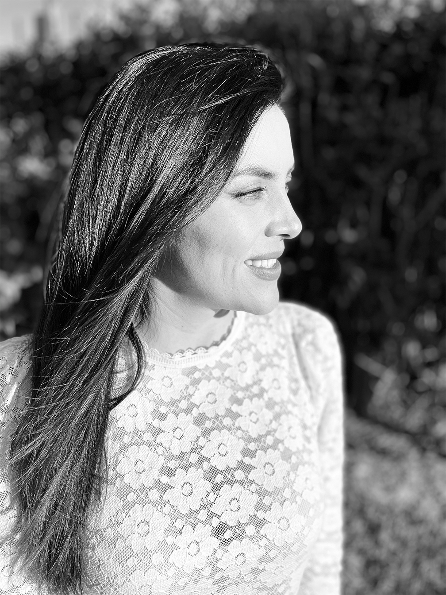

About Me
I am a 37-year-old Colombian and I am a student in the first term of the Interactive Media Design program at Algonquin College. I just started my classes and it is a challenge of which I would like to talk more in detail because I am very proud of it.
I am an Industrial Engineer specializing in project management with over 14 years of experience working on projects in various sectors including:
- Technology
- Banking
- Construction
- HR
Since May 20th 2019, I had been working full time as an Executive Account Manager at OmniPayments LLC, a US-based company that offers payments solutions, and I recently switched to part-time in order to join the college and follow my dreams.
Becoming a graphic designer was my frustration for many years, so now I really enjoy the change that I have done for my life and for start doing something that I actually like. I am convinced that my hapiness will be reflected on my family's life and we will grow and learn all together from this process.
"Impossible is just an opinion"- Paulo Coelho
Some of my hobbies are:
- Painting Clothes
- Swimming
- Dancing
- And of course, having fun with my daughter :)
I am extremely happy with the program I chose, I believe that It will give me a lot of knowledge and will allow me to venture into digital design and web development. To be honest, the Responsive Web Design subject made me feel a bit nervous but so far everything has gone well and I have enjoyed that little I have learned about HTML.
Check my notes about HTML